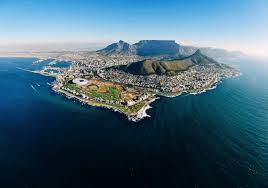
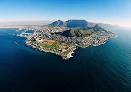
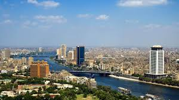
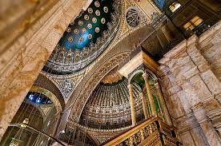
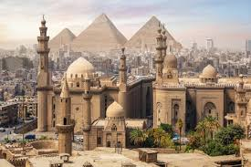
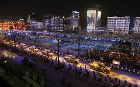
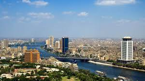
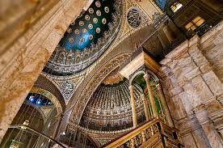
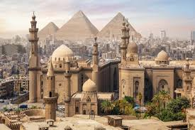
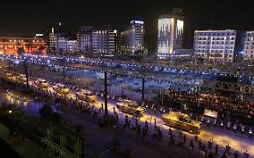

An immersive cultural experience or a city festival in Africa?
Cape Town, South Africa
The Cape is a cultural mix of Dutch, French, Malay, English, Afrikaner and Xhosa lifestyles. All sharing the treasures of the Cape to the enjoyment of all.
Experience the Bo-Kaap with a history that dates back more than 300 years.
See the spirit of "Ubuntu" (togetherness) as the people of the townships heal the scars of Apartheid.
Visit the Cape Winelands to see the European cultural influence in the Cape through architecture.
Arniston, on the Cape Overberg coast is a place where the fisherfolk have been living in the same mud and reed houses for generations.
The Bo-Kaap, nestling on the slopes of Lion's Head in Cape Town, is a treasure trove of Malay cultural heritage. Built on the ruins of the slave quarters of old, the Bo-Kaap has a history that dates back some 300 years. Many of the descendants of slaves still live here.
The township culture of the Cape is a refreshing perspective of the region?s cultural diversity. Here rich and poor live side by side in a colourful mix of shacks and brick homes. The signs of healing from apartheid are evident in the spirited entrepreneurial activities that can be seen while walking from shebeens (township restaurant/bars), to craft markets, churches and local museums. Visitors are encouraged to visit the townships with a tour group. Tour guides will be able to show visitors the true essence of the areas.
Much of the French, English and Dutch settler influence on the Cape is particularly visible in the architecture and culture of the Cape Winelands. The impact of these cultures can be experienced in places such as the towns of Stellenbosch, Paarl and Swellendam where the architecture, art and food all enjoy a distinct Afrikaans flavour. Tulbagh in the Cape Winelands has 32 national monuments on the same street. These historical homesteads form the biggest concentration of national monuments in the world. Similarly, the town of Franschhoek, settled by French Huguenots centuries ago, is a veritable "Petit France" with its wine and culinary traditions not to miss. Eat, drink and sleep Franschhoek.
The history surrounding the origins of the fishing village of Arniston on the Cape Overberg coast, promises a blend of romance, beauty and intrigue. The fisher folk families of this area can still be seen plying their trade in the Indian Ocean as their children play between the mud and reed cottages that have survived a thousand Cape storms.
One of the best ways to experience the Cape's cultural treasures is with a tour group. Tour guides are knowledgeable and will ensure visitors are well-informed. The Local Tourism Office in every town will be able to assist visitors with maps, information on where to go and tour operators to contact.

 

Cairo, Egypt
Being the largest metropolis in the Arab World, Cairo attracts countless numbers of tourists, students and ex-pats every year. Those looking to get a glimpse into Egypt’s history and experience the culture first-hand will want to make sure a visit to Cairo is on their travel wish list. These are just a few of the many reasons why you should make plans to visit Cairo, Egypt.Here are seven reasons why you should visit Cairo:
A visit to Cairo will put you deep into Arab culture. This includes learning and experiencing everything from their cuisine to hospitality to their arts and lifestyles first-hand. Many tourists have reported being treated like family immediately upon their arrival in Cairo. Just about everyone in the city is happy to see tourists and treat visitors like they are very welcome.
When it comes to art and music, Cairo is home to a wide range of styles, many of which date back thousands of years. Music styles include traditional harps, flutes, stringed oud and some contemporary instruments. Complementing the music, locals have been known to dance in bright, sequined designed bras and long flowing skirts. You are sure to be amazed by the stunning performances of local belly dancers and find your toes tapping to Arabic beats.
You will have fun exploring the Egyptian National Museum, which gives an insight into the arts of this region, as well as takes you on a journey through Cairo’s history.
Many have referred to Cairo as one of the cities in the world that never sleeps. During your visit, you will have plenty of access to delivery services, restaurants, bars, nightclubs and other venues that are open around the clock. This means that there are plenty of activities for you to do without worrying about what time it is.
 






